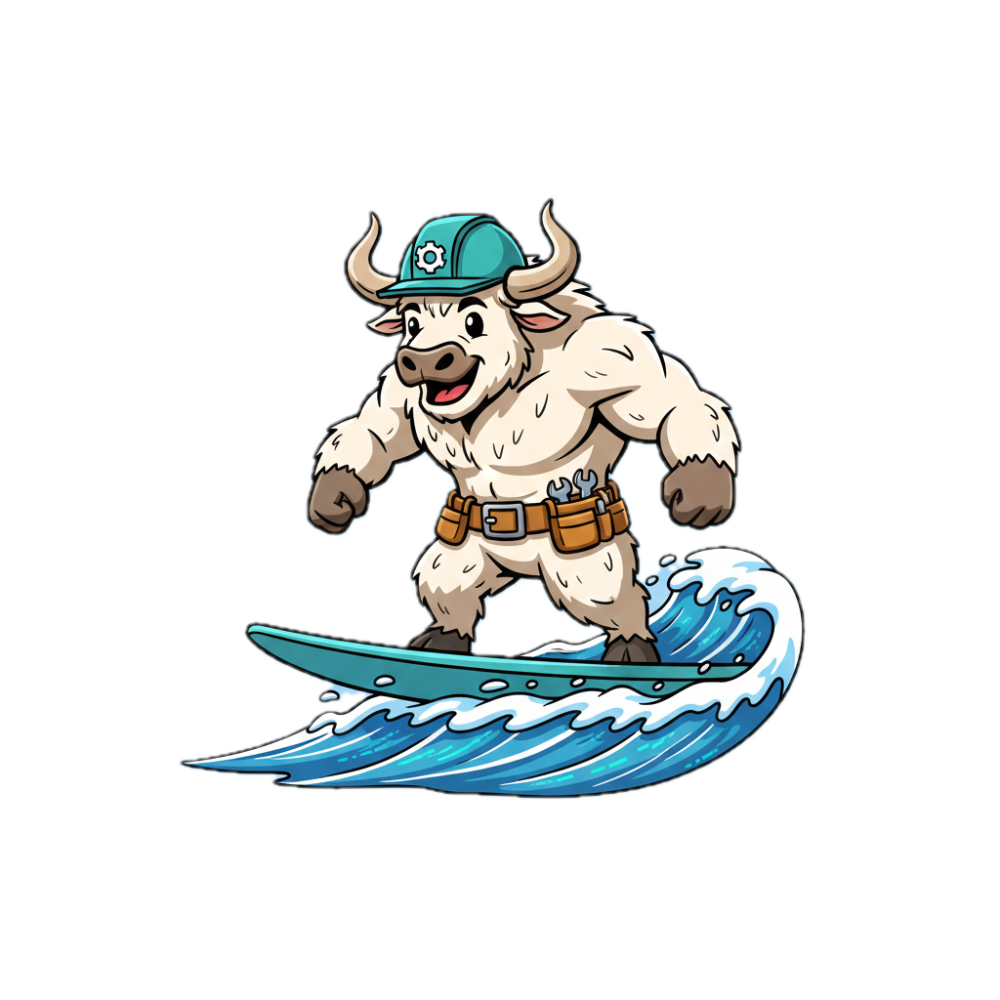

assets/yakflow-mascot.png to show mascot
Team-based Accelerate capability survey for practical, engineer-friendly improvement planning. Built for team self-assessment and improvement planning. NOT intended as a top-down performance metric for evaluating teams or individuals.